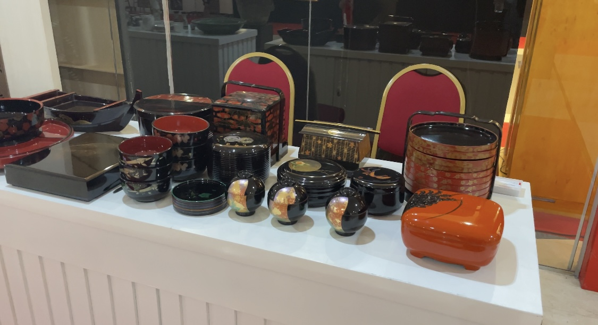

Titania - koma.com
Rabu, 11 Desember 2024 20:40 WIB
Jakarta, Koma.com. Art exhibition “tanpa batas #8” yang diadakan di lobby binatata menara bidara pada 1-7 desember menarik perhatian para pengunjung yang melewati lobby tersebut karena tempat nya luas, gratis, dan juga banyak sekali seni yang di perlihatkan.
Pameran seni adalah tempat yang krusial bagi para seniman untuk mempresentasikan karya-karya mereka kepada masyarakat. Aktivitas ini tidak hanya berfungsi sebagai bentuk penghargaan terhadap seni, tetapi juga menawarkan pengalaman visual yang mendalam untuk para pengunjung.
“Pameran ini bagus, terutama dalam cara seniman mengungkapkan ide-ide unik mereka. pameran ini bisa menjadi tempat kita untuk menenangkan diri” ujar Reza, salah satu pengunjung pameran"
Pameran ini berfungsi sebagai wadah bagi para seniman untuk memamerkan kreativitas dan imajinasi mereka. Melalui pameran, seniman dapat menampilkan karya-karya yang mencerminkan sudut pandang atau ekspresi pribadi mereka mengenai dunia.
Dalam pameran seni “tanpa batas #8” tidak hanya ada lukisan, tertapi juga banyak barang-barang antik lainnya. Lukisan yang ada juga bukan hanya untuk dipajang, pengunjung juga bisa membeli jika suka dengan lukisan
Pameran ini cocok untuk anda yang ingin mengambil spot foto untuk diunggah sosial media, dan juga mengisi waktu luang dengan teman, keluarga, dan pasangan karena lukisan lukisannya sangat memanjakan mata dan tidak dipungut biaya.